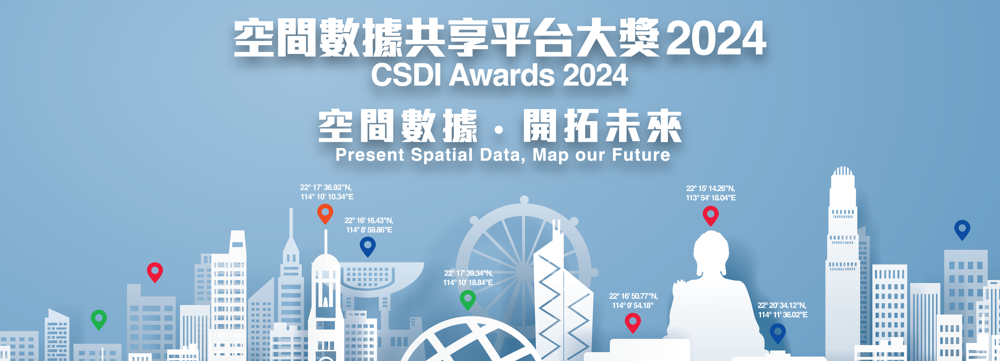
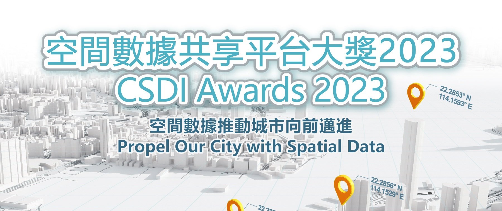

2025
空間數據共享平台大獎 2025
「共創北部空間，共享都會數據」
2025 年空間數據共享平台大獎以「共創北部空間，共享都會數據」為主題，鼓勵學生及公眾利用空間數據為北部都會區發展創新方案，強調其在建設更智能、更宜居香港的重要角色。
為進一步推廣 CSDI 並提升公眾對空間數據的興趣，發展局成立的地理空間實驗室自 2022 年起一直舉辦比賽。
2025 年空間數據共享平台大獎以「共創北部空間，共享都會數據」為主題，鼓勵學生及公眾利用空間數據為北部都會區發展創新方案，強調其在建設更智能、更宜居香港的重要角色。

2024 年空間數據共享平台大獎主題「空間數據 ‧ 開拓未來」慶祝空間數據的力量。邀請學生及公眾以創意方式運用空間數據，塑造我們城市美好的明天。

2023 年空間數據共享平台大獎採用「環境、社會及管治」(ESG) 為主題。鼓勵參加者利用空間數據解決這些重要議題，幫助香港實現更可持續及具韌性的未來。
2022 年地理信息系統應用公開賽鼓勵小學及中學學生以及公眾探索空間數據並建立 GIS 應用程式，發掘社區洞見並提出有意義的改善方案。